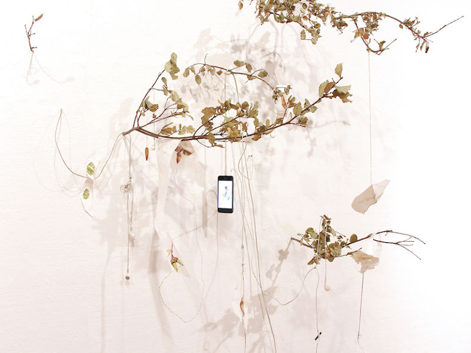

ALICIA ESCOTT IN RESIDENCY
residency show opening October 15th, 6-9PM
How do you ask for consent from an oak tree? Oak as in Oakland. Oak as in the large hardy trees that grow from a tiny acorn and link roots together deep underground in mutual support. Oaks that shade, hold ground, and create complex communities; intertwining their lives with the lives of a range of plants, animals, microbes and physical forces; including wind and FIRE. Fire that devastates and also regenerates.
Over the course of the last many seasons, Alicia Escott has been intimately relating to and reciprocating with these trees and the communities they build, through both habitat restoration and through the metaphors of mutual aid they inspire. Her practice includes making daily drawings of acorns; planting and giving water to tiny seedlings; and being both a voyeur and participant in the oaks abundant life of intertwined relationality.
This work includes by products of human made worlds that intersect with these fire evolved communities, sometimes in devastating ways - melted plastic construction materials, remnants of burnt homes, and precious metals are also intertwined in this messy and abundant story and in Alicia's investigations.
In a residency and exhibition at Dream Farm Commons Alicia Escott will be working from both sides of The Bay in collaboration with nearby Live Oaks. Seeking reciprocity, and asking consent to collaborate with the tree (not a simple task!) will be the basis for an installation: a space that people can walk through, immerse in entangled drawings, sculptures, found materials from California burn sites, consent-asking videos, found pieces of technology, precious discarded fragments of oak trees, and local construction materials.
